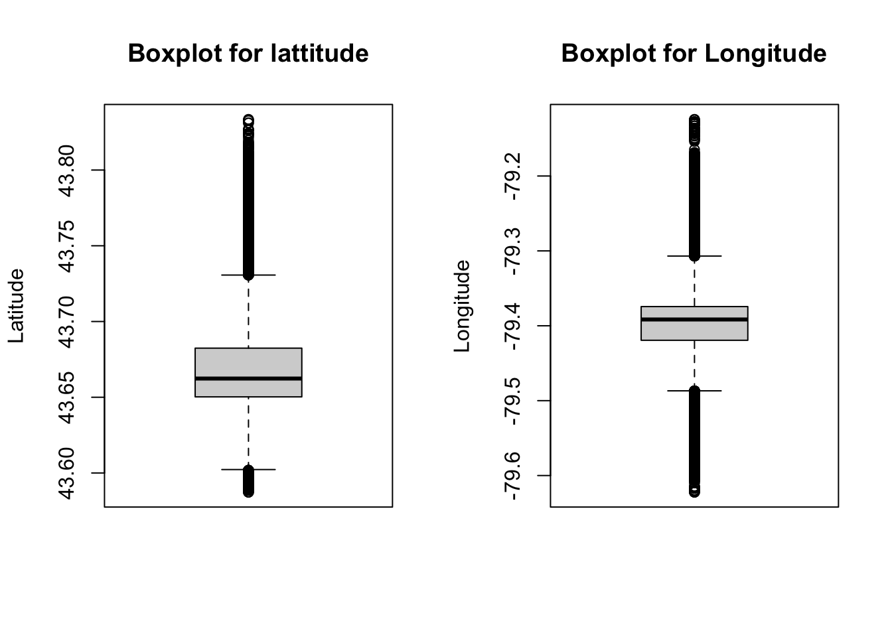
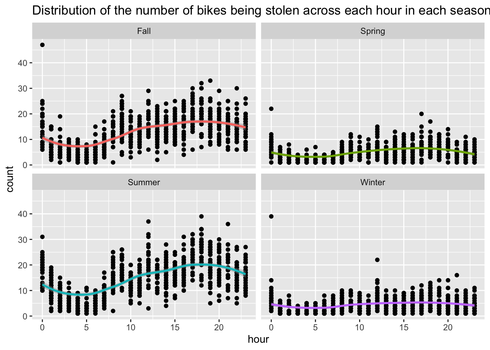
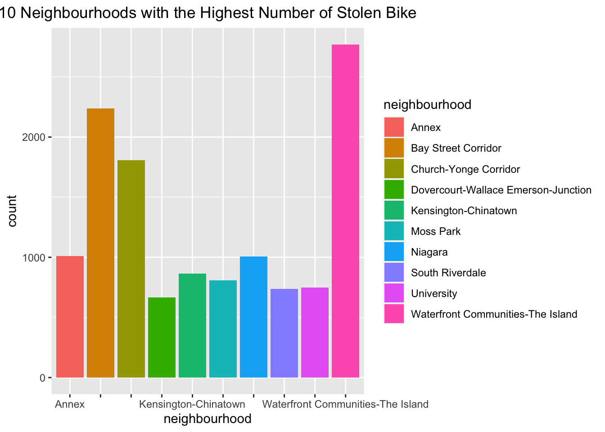
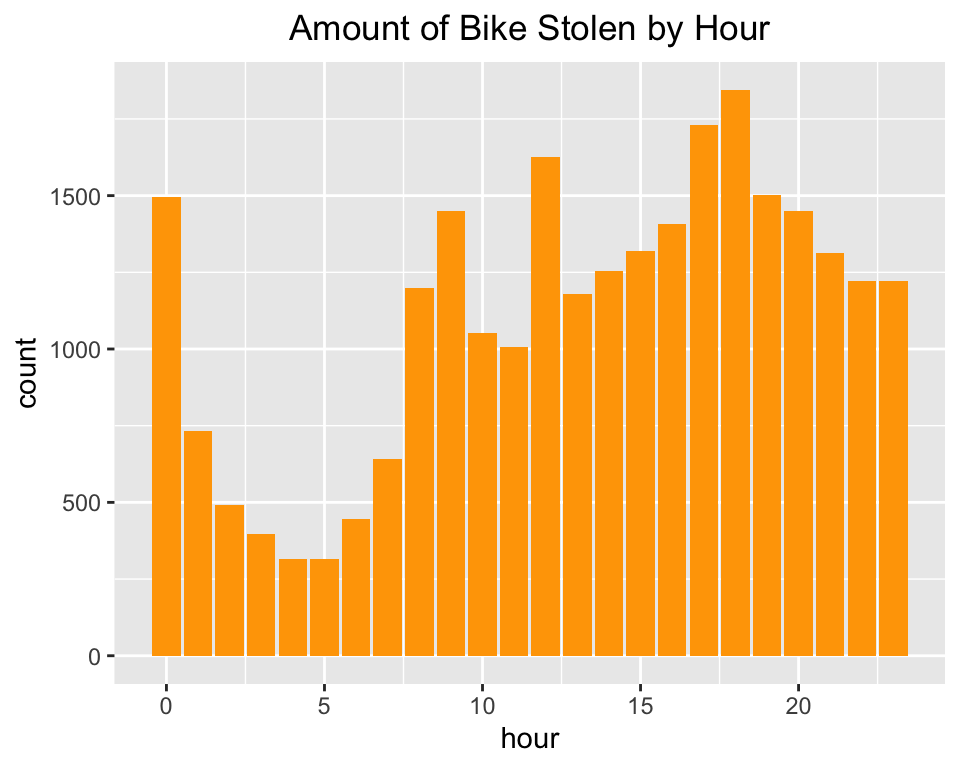
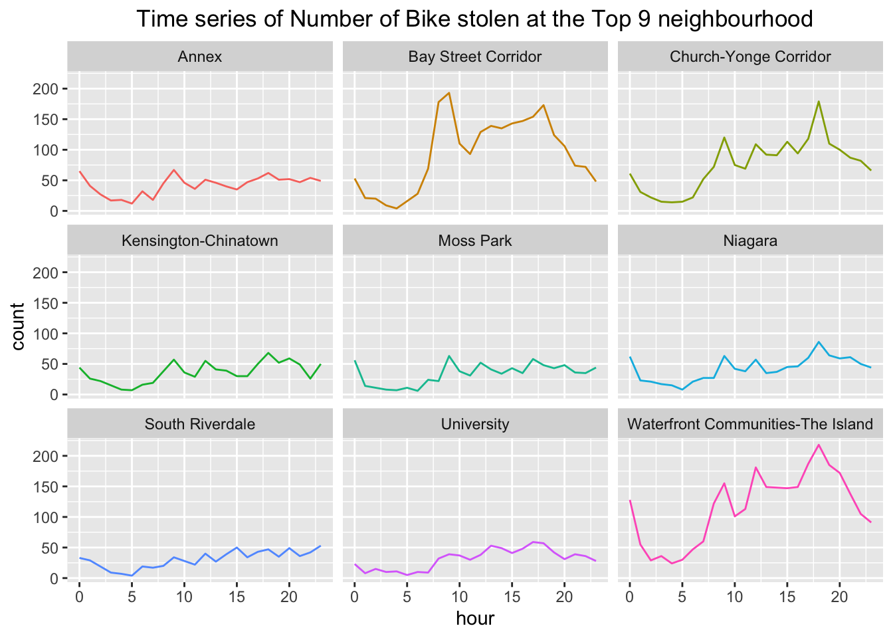
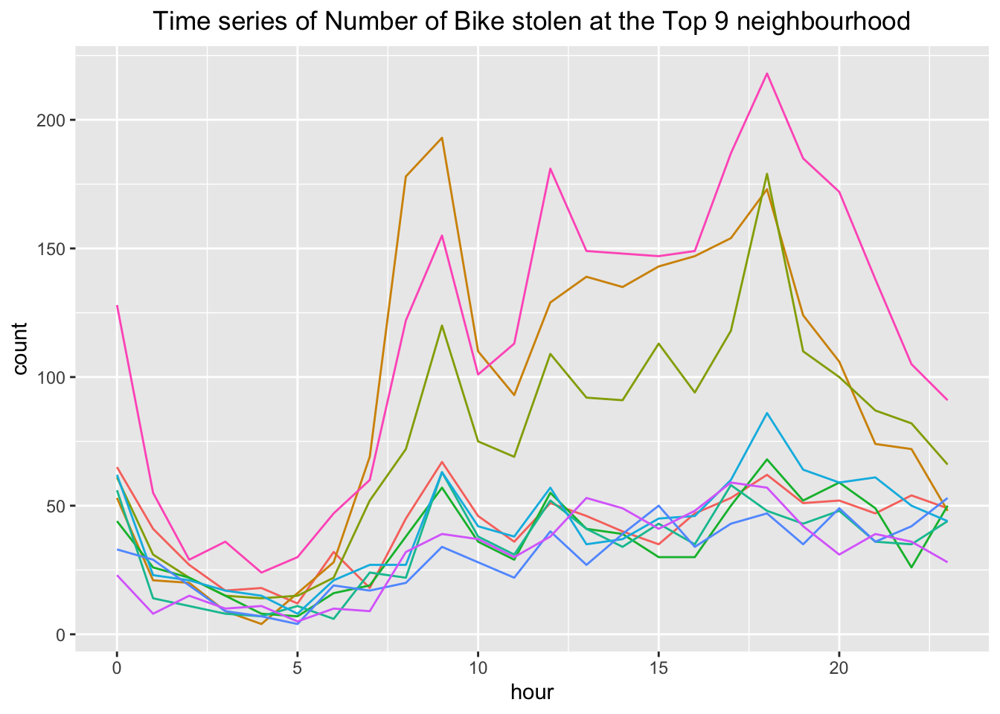

First, read in the data. Update the missing data identifiers to NA. Check for import issues (dimensions, headers, footers, variable names and variable types). Check for any data issues (import issues, missing values, data errors) particularly in the key variable we are analyzing. Make sure you write up a summary of all of your findings.
First, we will read in the data
# Read the data into bt
bt <- data.table::fread("Bicycle_Thefts.csv")Then, we will check the dimension and import issues.
# Check the dimension
dim(bt)
# Check the head of the data
head(bt)
# Check the tail of the data
tail(bt)
# Check variable name and type
str(bt)After, we will check any data issues (We will focus on city, Occurrence_Year, Occurrence_Month, Occurrence_DayOfMonth, Occurrence_DayOfWeek, Occurrence_Hour, Longitude, NeighbourhoodName, Premises_Type, Status, Bike_Type, Bike_Color).
# Look at summary of variables
# Summary of City
table(bt$City)
# Summary of Year
summary(bt$Occurrence_Year)
# Summary of Month
table(bt$Occurrence_Month)
# Summary of DayOfMonth
table(bt$Occurrence_DayOfMonth)
# Summary of DayOfWeek
table(bt$Occurrence_DayOfWeek)
# Summary of Hour
table(bt$Occurrence_Hour)
# Summary of Longtitude
summary(bt$Longitude)
# Summary of Lattitude
summary(bt$Latitude)
# Summary of NeighbourhoodName
table(bt$NeighbourhoodName)
# Summary of Premises_Type
table(bt$Premises_Type)
# Summmary of Status
table(bt$Status)
# Summary of Bike_Type
table(bt$Bike_Type)
# Summary of Bike_Color
table(bt$Bike_Colour)We will now handle with data issue: replace all data identifier to NA.
# Update all missing value identifiers to NA
bt <- bt %>%
mutate(Longitude = ifelse(Longitude >= 0, NA, Longitude)) %>%
mutate(Latitude = ifelse(Latitude <= 0, NA, Latitude)) %>%
mutate(City = ifelse(City == "NSA", NA, City)) %>%
mutate(NeighbourhoodName = ifelse(NeighbourhoodName == "NSA", NA, NeighbourhoodName)) %>%
mutate(Status = ifelse(Status == "UNKNOWN", NA, Status)) %>%
mutate(Bike_Colour = ifelse(Bike_Colour == "NULL" | Bike_Colour == "18" |
Bike_Colour == "", NA, Bike_Colour))See if there exists more data issues.
# Summary of New Longitutde and Latitude
summary(bt$Longitude)## Min. 1st Qu. Median Mean 3rd Qu. Max. NA's
## -79.82 -79.42 -79.39 -79.39 -79.37 -78.86 303summary(bt$Latitude)## Min. 1st Qu. Median Mean 3rd Qu. Max. NA's
## 43.32 43.65 43.66 43.67 43.68 43.91 303Summary of Step 1: At very beginning, we have read the Bicycle Thefts data and stored it into a data table \(bt\). We found our data set contains 30154 observations of 35 variables. By looking at the head and tail of our data, all data points seems reasonable (with no importing issues). Moving closely to the summary of variables (we mainly focus on City, Occurrence_Year, Occurrence_Month, Occurrence_DayOfMonth, Occurrence_DayOfWeek, Occurrence_Hour, Longitude, NeighbourhoodName, Premises_Type, Status, Bike_Colour, Bike_Type), we found that the maximum of Longitude and minimum of Latitude is zero, which is not inside Toronto area. We believe these zero values are the missing data identifiers, therefore replace all of them with NA. We also found on the website that NSA is the missing data identifiers for City & NeighbourhoodName, and UNKOWN is another missing data identifiers for Status. Therefore, we replace all of them with NA. After that, we did not notice any more data errors within our main variables, as there isn’t any sign of single point being significantly varied from all other points.
Clean the data – keep only necessary data columns and change the names of the key variables so that they are easier to identify. Change the type of key variables from string to factor as appropriate. Identify any outlier reports, and justify how you handle them.
We will keep rows without NA, report as STOLEN, within Toronto and only necessary columns
# Select Proper Rows and Columns
bt <- bt %>% select(OBJECTID, City, Occurrence_Year , Occurrence_Month ,
Occurrence_DayOfMonth , Occurrence_DayOfWeek ,
Occurrence_Hour , Longitude , Latitude, NeighbourhoodName
, Premises_Type, Bike_Colour, Bike_Type, Status) %>%
drop_na() %>%
filter(Status == "STOLEN") %>%
filter(City == "Toronto")We will rename some columns to make life easier
# Column Rename
bt <- bt %>% mutate(id = OBJECTID, year = Occurrence_Year,
month = Occurrence_Month,
dayofmonth = Occurrence_DayOfMonth,
dayofweek = Occurrence_DayOfWeek,
hour = Occurrence_Hour,
latitude = Latitude,
longitude = Longitude,
neighbourhood = NeighbourhoodName,
premises = Premises_Type,
color = Bike_Colour,
type = Bike_Type) %>%
select(id, year, month, dayofmonth, dayofweek, hour, latitude,
longitude, neighbourhood, premises, color, type)Check which can apply string to factor change
str(bt)Apply Change
# Change string to factor
bt <- as.data.frame(unclass(bt), stringsAsFactors = TRUE)Identify ourliers
# Boxplot of Lattitude and Longitude to identify outliers
par(mfrow= c(1, 2))
boxplot(bt$latitude, ylab = "Latitude", main = "Boxplot for lattitude")
boxplot(bt$longitude, ylab = "Longitude", main = "Boxplot for Longitude")
Summary of Step 2: Initially, we select OBJECTID, City, Occurrence_Year, Occurrence_Month, Occurrence_DayOfMonth, Occurrence_DayOfWeek, Occurrence_Hour, Longitude, Latitude, NeighbourhoodName, Premises_Type, Bike_Colour, Bike_Type, and Status as all necessary variables to solve the research question. Then, as required by the research question, we only select rows which are inside of (City=) Toronto and report as (Status=) STOLEN. And we remove any observations with NA in at least one of our necessary variables. Furthermore, we rename some of the key variables and convert all string to factor to obtain a clean and valid data set.
We plotted two boxplots of Lattitude and Longitude to see if there exists outlines in our clean data set. It turns out that no observation is far away from the others. Therefore, we believe there is no more outliers in our clean dataset. In fact, all outliers are outside of Toronto, and they have already been filtered out from our clean data set.
Explore the main question of interest. Calculate summary statistics for each season (e.g. means, medians, variances) and then conduct some basic analyses that enable you to compare across winter/spring/summer/fall (e.g. t-test, linear regression). Be sure to show the results and write up explanations of what you observe in these data.
Add a new variable season
bt <- bt %>% mutate(season = case_when(
month %in% c("November","December","January") ~ "Winter",
month %in% c("February","March","April") ~ "Spring",
month %in% c("May","June","July") ~ "Summer", TRUE ~ "Fall"))
# Change string to factor
bt <- as.data.frame(unclass(bt), stringsAsFactors = TRUE)We want to group our data by season,day and hour, that is, we want to know how many bike was stolen per hour for each season.
bt_season <- bt %>% group_by(season, dayofmonth, hour) %>% summarise(count = n())## `summarise()` has grouped output by 'season', 'dayofmonth'.
## You can override using the `.groups` argument.We want to calculate the mean, median, sd amount of bike being stolen per hour in each month
bt_season %>% group_by(season) %>% summarise(mean = mean(count),
median = median(count),
sd = sd(count))We build linear regression model to test whether bike stolen per hour depends on season
model <- lm(count~season, data = bt_season)
summary(model)##
## Call:
## lm(formula = count ~ season, data = bt_season)
##
## Residuals:
## Min 1Q Median 3Q Max
## -13.697 -3.036 -0.455 3.272 34.545
##
## Coefficients:
## Estimate Std. Error t value Pr(>|t|)
## (Intercept) 12.7280 0.2057 61.885 < 2e-16 ***
## seasonSpring -7.6923 0.2979 -25.821 < 2e-16 ***
## seasonSummer 1.9690 0.2912 6.763 1.64e-11 ***
## seasonWinter -8.2733 0.2979 -27.771 < 2e-16 ***
## ---
## Signif. codes: 0 '***' 0.001 '**' 0.01 '*' 0.05 '.' 0.1 ' ' 1
##
## Residual standard error: 5.591 on 2817 degrees of freedom
## Multiple R-squared: 0.3975, Adjusted R-squared: 0.3969
## F-statistic: 619.6 on 3 and 2817 DF, p-value: < 2.2e-16We will look deeper into amount bike stolen at each hour for each season
ggplot(bt_season, aes(y=count, x=hour)) + geom_point() + facet_wrap(~season) +
geom_smooth(aes(color = season), show.legend = FALSE) +
labs(title = "Distribution of the number of bikes being stolen across each hour in each season") ## `geom_smooth()` using method = 'loess' and formula = 'y ~ x'
Summary of Step 3: To further investigate when bike is more likely to be stolen, we have break our data into four categories. We have group December, January, February into Winter; March, April, May into Spring; June, July, August into Summer; and September, October, November into Fall. For each season, we are interesting the amount of bike being stolen per hour to decide if bike stolen depends on the season. Therefore, we group our data by season and day+hour. As a summary, we found that the average number of bike being stolen per hour for winter, spring, summer, fall is 4.45, 5.03, 14.69, 12.72 receptively. By fitting a linear regression model, we found that the \(p\) value for each coefficient is close to zero, which saying they are significantly different with each others. Looking more closely at the distribution of number of bikes being stolen across each hour in each season, we found that 17-19 pm is the peak. Therefore, we might say Bikes are more likely to be stolen in Fall/Summer at 17-19 pm.
Create exploratory plots (boxplots, histograms, time series) of which neighbourhoods and time of day bikes were reported stolen from.
As there are too many neighborhoods, we will firstly display the 10 neighbourhoods with Highest Number of Stolen Bike by barplot.
nb <- bt %>% group_by(neighbourhood) %>%
summarise(count = n()) %>% arrange(desc(count))
ggplot(data = head(nb, 10), aes(x=neighbourhood, y = count,
fill=neighbourhood)) +
geom_bar(stat="identity") +
scale_x_discrete(guide = guide_axis(check.overlap = TRUE)) +
labs(title = "10 Neighbourhoods with the Highest Number of Stolen Bike") +
theme(plot.title = element_text(hjust = 0.5))
Since we are interesting in the amount of bike stolen by hour, we will visualize this distribution by making anther barplot.
hr <- bt %>% group_by(hour) %>%
summarise(count = n())
ggplot(data = hr, aes(x=hour, y = count)) +
geom_bar(stat="identity", fill="orange") +
labs(title="Amount of Bike Stolen by Hour") +
theme(plot.title = element_text(hjust = 0.5))
Now, we will look at the time series of the number of stolen bike for each of those top neighbouhood
nb_h <- bt %>% filter(neighbourhood %in% head(nb, 9)$neighbourhood) %>%
group_by(neighbourhood, hour) %>%
summarise(count = n(), .groups = "keep")
ggplot(data = nb_h, aes(x=hour, y=count, color=neighbourhood)) +
geom_line() + facet_wrap(~neighbourhood) +
labs(title =
"Time series of Number of Bike stolen at the Top 9 neighbourhood") +
theme(plot.title = element_text(hjust = 0.5), legend.position = "none")
ggplot(data=nb_h, aes(x = hour, y = count, color = neighbourhood)) +
geom_line() +
labs(title =
"Time series of Number of Bike stolen at the Top 9 neighbourhood") +
theme(plot.title = element_text(hjust = 0.5), legend.position = "none")
Create a basic map in leaflet() that shows the locations of all stolen unicycles (and their colours).
# Click the Markers to see their colours!
unbt <- bt %>% filter(type=="UN")
unbt <- unbt %>% mutate(colorc = case_when(
color == 'RED' ~ "red",
color == "GRY" ~ "grey",
color == "BLK" ~ "black",
color == "WHI" ~ "white",
color == "GRN" ~ "green",
TRUE ~ "brown"
))
leaflet(unbt) %>%
addProviderTiles('OpenStreetMap') %>%
addMarkers(lng = ~longitude, lat = ~latitude, popup = ~color ) %>%
addCircles(lng = ~longitude, lat = ~latitude, fillColor = ~colorc, fillOpacity = 1, radius = 500)